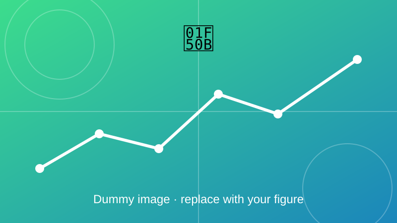

Renewable Energy Integrated Smart Charging Framework
A simulation framework combining renewables, storage and EV charging for smart grids.

Overview
An integrated simulation framework that combines renewable energy sources, battery energy storage systems (BESS), energy management systems (EMS), distribution operators and EV charging infrastructure for smart grid applications.
Objectives
- Combine PV generation, storage and EV charging in one model.
- Let the EMS decide when to charge, discharge or import from the grid.
- Reduce grid import and cost while respecting network limits.
Method and key equations
At every time step the EMS solves a power-balance problem. Storage energy is tracked with a state-of-charge model, and the schedule is chosen to minimise the cost of grid energy.
Power balance: supply from PV, grid and battery discharge equals the load, EV charging and battery charging.
Battery state of charge, with charging and discharging efficiencies \(\eta_c\), \(\eta_d\) and energy capacity \(E_{\mathrm{cap}}\).
The EMS objective: minimise the total cost of grid energy, where \(c(t)\) is the price at time \(t\).
Outcome
Add your results here: key findings, figures, and links to the related paper or code.